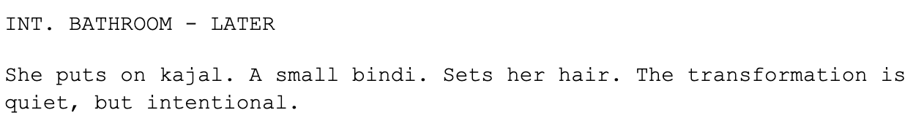

MOOSIC
"Moosic" was my final Computer Science project in Class 12 — a mood-based music player that recommends songs based on your current emotion.
Built using Python for the backend and SQL for the database, it combines basic emotion detection with curated playlists.
I handled both logic and design.
Attached below are few images from the initial designing process to the final.

TECH-STACK:
Languages: Python, SQL
Tools: SQLite, Tkinter
Concepts used: CRUD operations, UI design, basic OOP, file handling
This project gave me a hands-on understanding of how coding can actually shape real-world tools. It also helped me realise that I enjoy blending tech and creativity — something I hope to keep exploring.